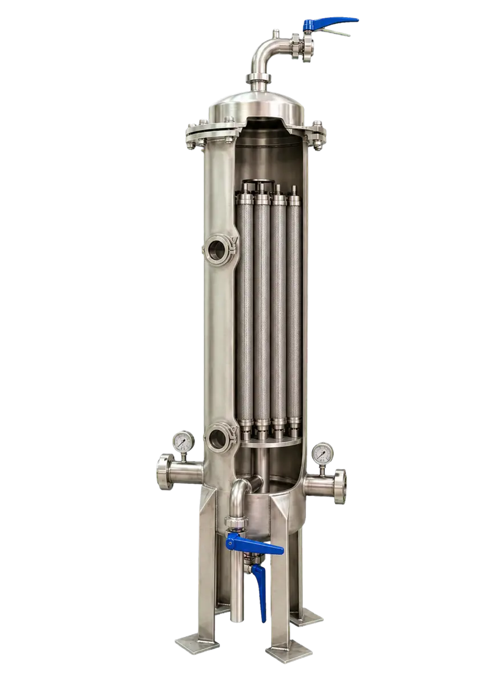
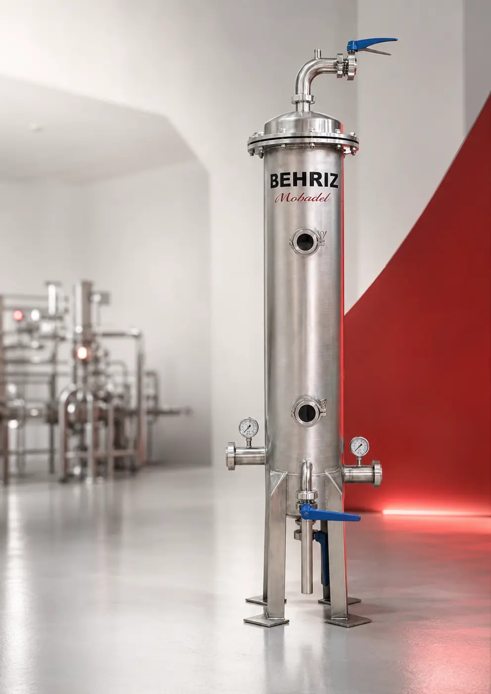
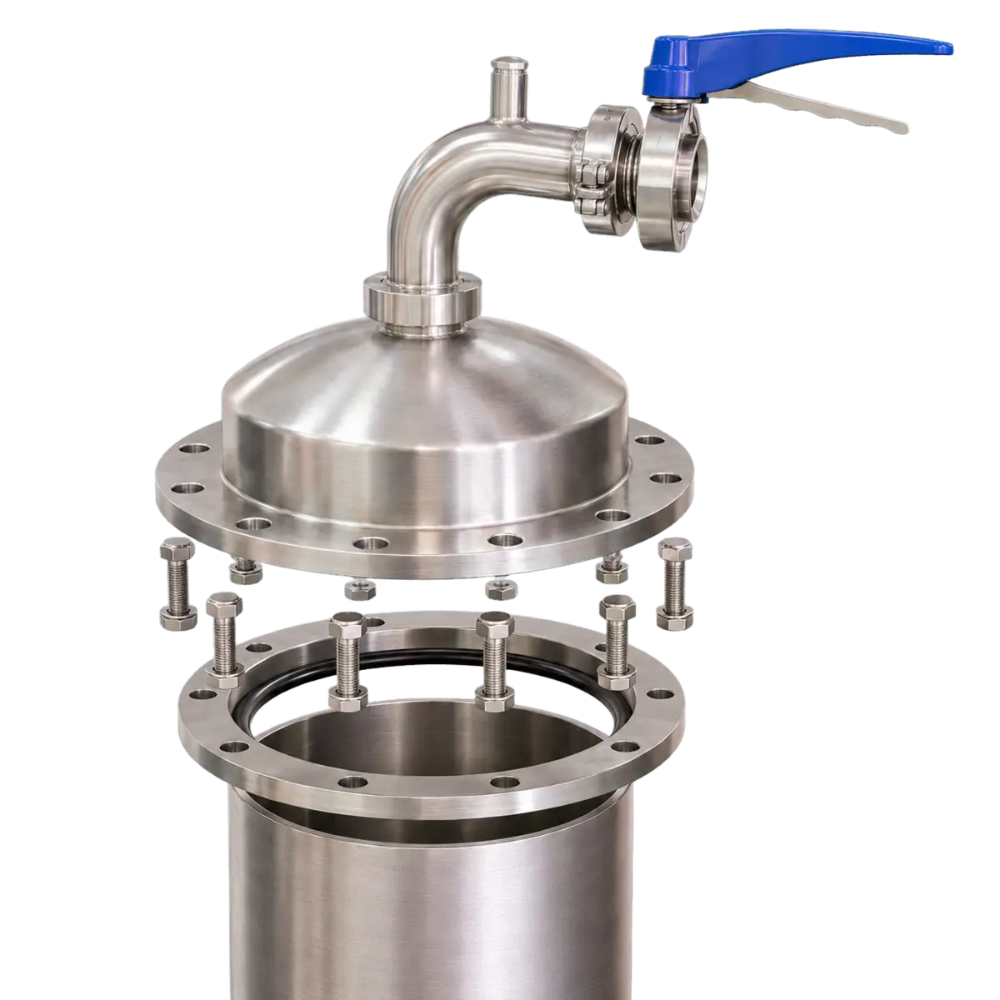
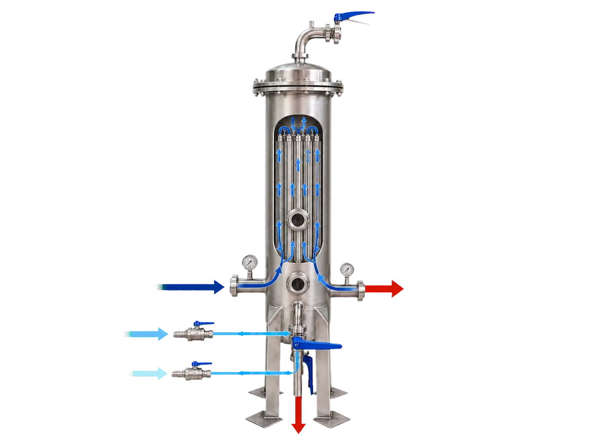
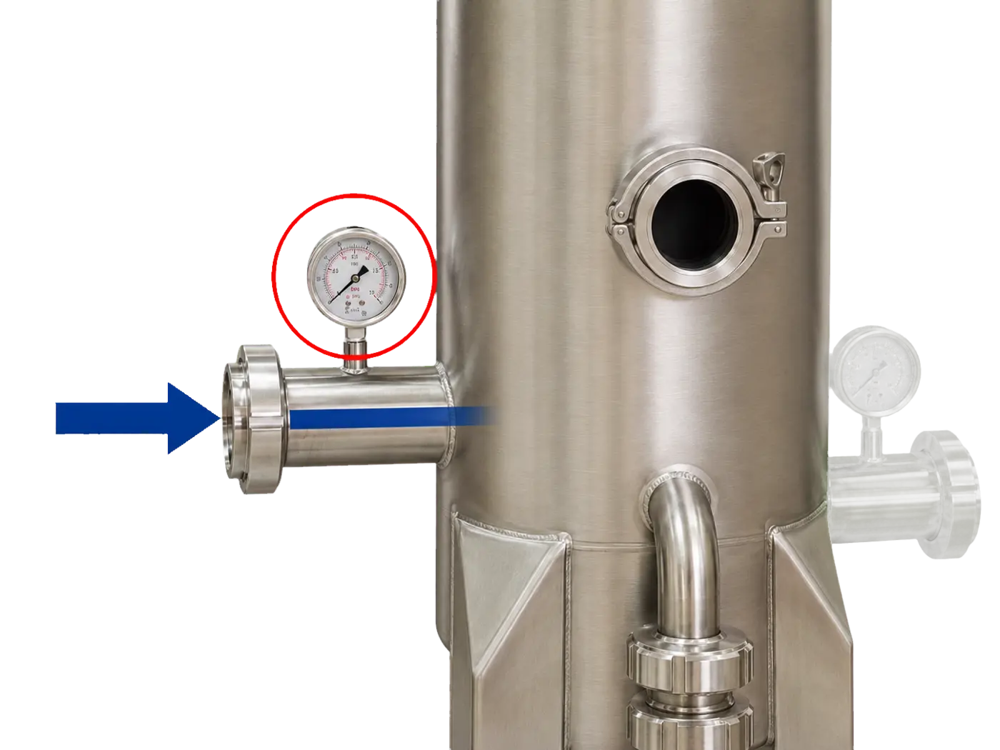
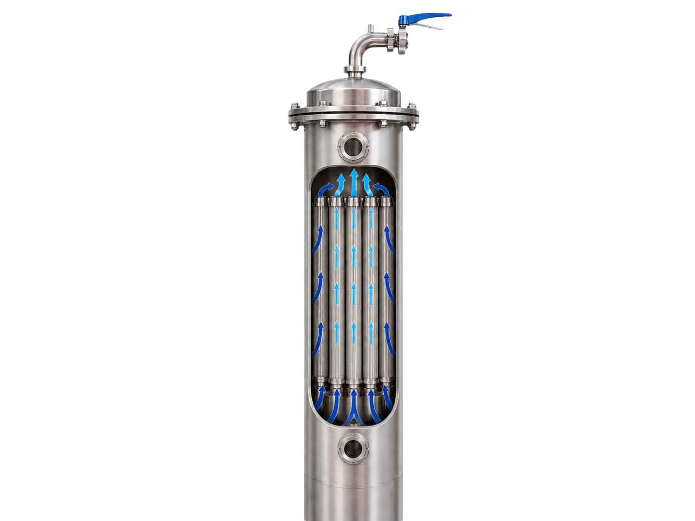
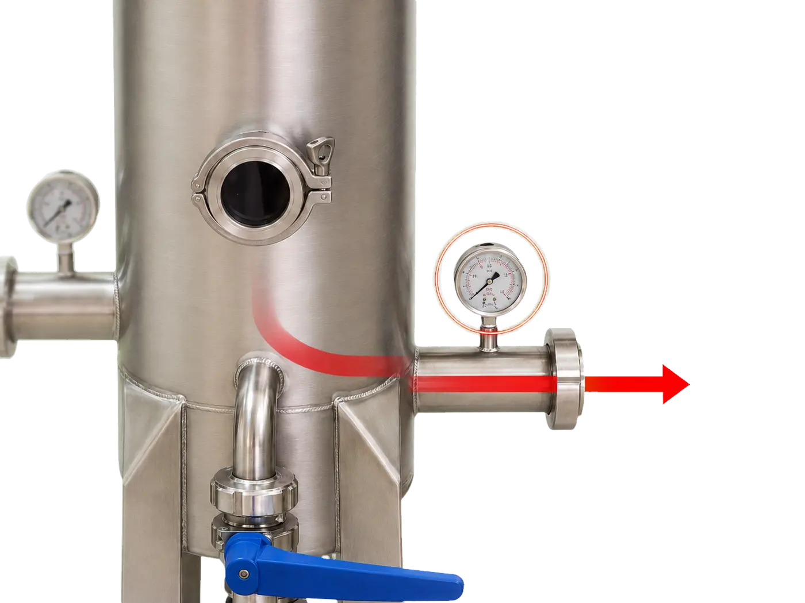
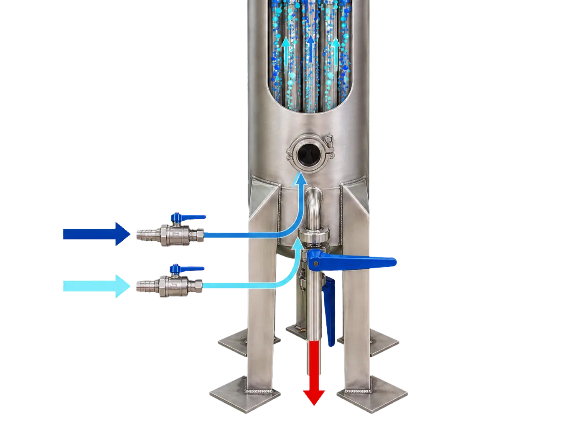

هوزینگ و آرایش کارتریجها
بدنه استنلس استیل با آرایش ۵ یا ۹ کارتریج و هوزینگهای ۱۲، ۱۸ و ۲۴ اینچ، متناسب با ظرفیت و دقت موردنیاز خط طراحی میشود.
فیلتر کارتریج استنلس استیل برای فیلتراسیون دقیق و مرحله نهایی تصفیه سیالات طراحی میشود. ساختار بهداشتی، مسیر CIP و سیستم Backwash، شستوشوی دستگاه را بدون بازکردن درب امکانپذیر میکند.

BEHRIZ / FILTRATIONپیشتصفیه سیستم RO و فیلتراسیون آب، آبمیوه، ماءالشعیر، شربت و سایر سیالات صنایع غذایی و آشامیدنی.
مزایاجزئیات داخلی و اتصالات فیلتر کارتریج تک بهریز مبدل

بدنه استنلس استیل با آرایش ۵ یا ۹ کارتریج و هوزینگهای ۱۲، ۱۸ و ۲۴ اینچ، متناسب با ظرفیت و دقت موردنیاز خط طراحی میشود.

فلنج پیچومهرهای، گسکت محیطی و اتصالات بهداشتی، آببندی مطمئن دستگاه را در فشار کاری و چرخه شستوشو فراهم میکنند.
مسیر سیال از ورود تا فیلتراسیون و چرخه بکواش

سیال از ورودی جانبی وارد هوزینگ میشود و فشار ورودی توسط گیج قبل از مرحله فیلتراسیون کنترل میگردد.

جریان در اطراف کارتریجها توزیع شده و با عبور از مدیای فیلتر، ذرات معلق تا دقت ۲، ۵ یا ۱۰ میکرون جداسازی میشوند.

سیال تصفیهشده در کلکتور خروجی جمع میشود؛ گیج خروجی امکان کنترل اختلاف فشار و وضعیت کارتریجها را فراهم میکند.

آب و هوای فشرده از مسیر اختصاصی وارد میشوند و آلودگیهای جداشده از طریق شیر تخلیه خارج میگردند؛ بدون نیاز به بازکردن درب دستگاه.

فیلتر کارتریج استنلس استیل برای فیلتراسیون دقیق آب، آبمیوه، شربت و ماءالشعیر با قابلیت CIP و Backwash طراحی میشود. انتخاب درست دستگاه فقط با نام محصول ممکن نیست؛ ویژگی سیال، ظرفیت واقعی، فشار، دما، ساعات کار و برنامه شستوشو باید در طراحی لحاظ شوند.
| ظرفیت | ۱۰٬۰۰۰ تا ۳۵٬۰۰۰ لیتر در ساعت |
|---|---|
| متریال | AISI 304 |
| پیکربندی | ۲، ۵ و ۱۰ میکرون |
مشخصات بالا بازه عمومی محصول است و دیتاشیت نهایی بعد از بررسی مهندسی پروژه صادر میشود.
برای استعلام قابل اتکا، نوع محصول یا سیال، ظرفیت خط، ساعات کار، شرایط شستوشو و سطح اتوماسیون را ارسال کنید. پس از بررسی، پیکربندی فنی و محدوده قیمت پروژه ارائه میشود.
قیمت براساس ظرفیت، مشخصات سیال، متریال، سطح اتوماسیون، ابزار دقیق و محدوده نصب محاسبه میشود. برای پیشنهاد دقیق باید اطلاعات واقعی خط بررسی شود.
نوع محصول، ظرفیت یا دبی، دما، فشار، شرایط شستوشو و محدودیت فضای نصب باید مشخص شود.
بله. بهریز مبدل مشخصات نهایی و چیدمان دستگاه را متناسب با فرایند و شرایط کارخانه طراحی میکند.